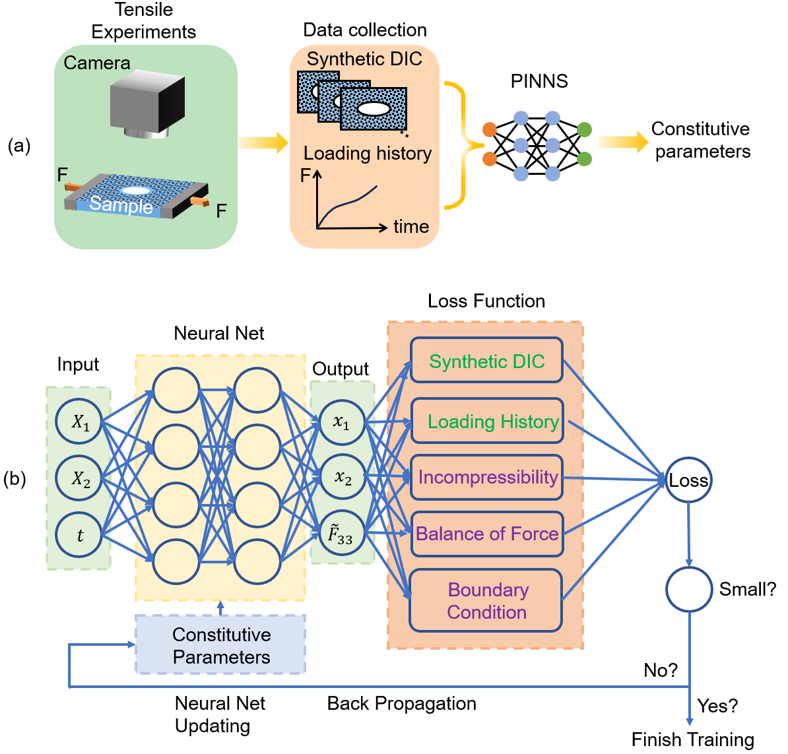
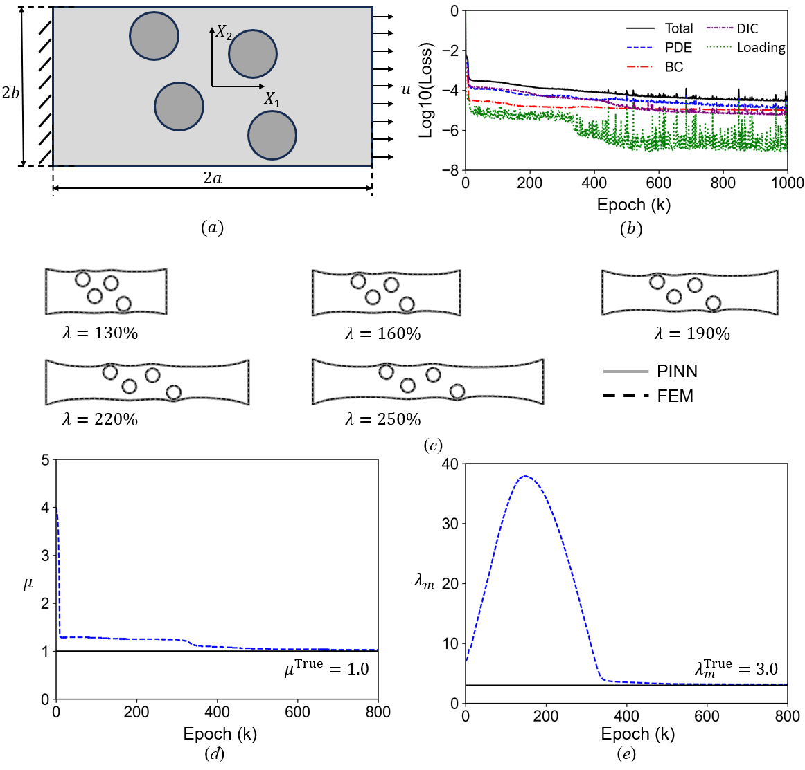

The configurational change of the material, such as the crack tip's propagation or the dislocation's motion, usually leads to a variation in the total energy. The change rate of the system potential is described either by the energy release rate or the energetic/configurational force. The ruga pattern, such as wrinkles, creases, or ridges, is a deformation mode of the material surface. The configurational force controls their positions and phases.
The crease pattern is a localized deformation mode with significant deformation nonlinearity near the crease tip. Like the Peach-Koehler force acting on the dislocation, the crease is exerted by the thermodynamic driving force provided by the external compression stress and the image stress field of boundaries. Regardless of how the crease core is introduced, e.g., via the point force or the geometry defect, its growth is governed by the configurational force.
|  |  |
Identifying constitutive parameters in engineering and biological materials, particularly those with intricate geometries and mechanical behaviors, remains a longstanding challenge. The recent advent of Physics-Informed Neural Networks (PINNs) offers promising solutions, but current frameworks are often limited to basic constitutive laws and encounter practical constraints when combined with experimental data. In this paper, we introduce a new PINN-based framework designed to identify material parameters for soft materials, specifically those exhibiting complex constitutive behaviors, under large deformation in plane stress conditions. Distinctively, our model emphasizes training PINNs with multi-modal time-dependent experimental datasets consisting of full-field deformation and loading history, ensuring algorithm robustness even amidst noisy data. Our results reveal that our framework can accurately identify constitutive parameters of the incompressible Arruda-Boyce model for samples with intricate geometries, maintaining an error below 5\%, even with an experimental noise level of 5\%. We believe our framework sets the stage for a transformative approach in modulus identification for complex solids, especially for those with geometrical and constitutive intricate.
The superlattice with orientational order has unique electromeganetic properties. The quantum dots decorated with semi-sphere gold patches can adjust its position in the well ordered superlattice.
The host-patch structure is described with two non-dimensionalized parameters L/R_core and R_patch/R_core. Within the parameter space, the superlattice can have either orientation order, non-orientation order or translational breaking. In the current work, we characterize the geometry compatability between neighboring particles based on the topological model. A theoretical model based on both the necessary condition and the theoretical condition is proposed.
The dynamic instability of the superlattice is characterized by the phonon dispersion relationship.
Our research presents findings on the linear alignment of single-strand DNA (ssDNA) with flexoelectric crinkles. Through molecular dynamic simulations of the curved ssDNA partially attached to the crinkles, it was determined that the adsorption rate is proportional to the crinkle strength. The non-uniform crinkles, which generate a potential gradient along their direction, were found to effectively guide the translocation of ssDNA. The higher crinkle strength gradient was also found to minimize the backsliding of the ssDNA during translocation. To create a substrate with these non-uniform crinkles, the authors designed a silicon wafer with an hourglass-shaped hole and transferred a CVD-MLG onto its surface. The deformation state of the CVD-MLG was then measured using Atomic Force Microscopy (AFM).